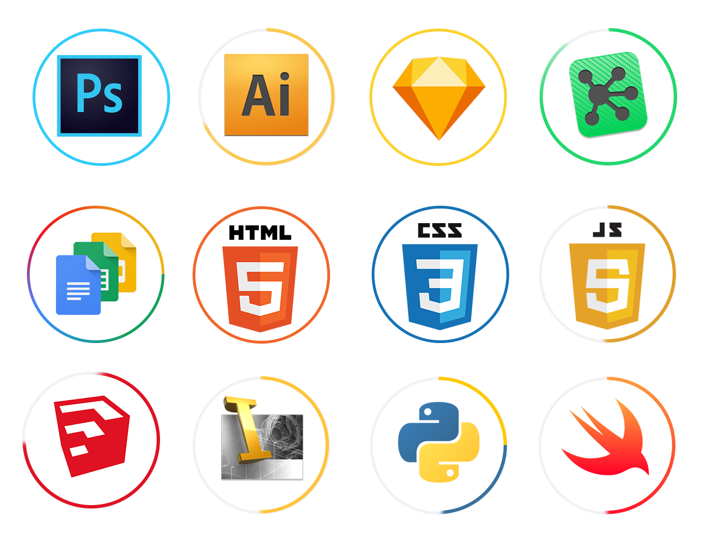

I am
a User Researcher.
a Visual Designer.
a Photographer.
a Front-end Web Developer.
an Experience Architect.
aka UX Designer; Interaction Designer; Product Designer
UX Design: Information Architecture, Interaction Design, User Flows, Site Maps, System Maps, Layout, Messaging & Copy, Concept sketches-> Wireframes-> Hi-fi Mock-ups-> Prototyping, UX Artifacts (Empathy maps, Affinity Maps, Concept Diagrams, Experience Journeys etc.)
Research: User Surveys, User Research, Contextual Inquiry, Qualitative Analysis, Quantitative Analysis, Card Sorting, User Interviews, User Personas, Competitive Analysis, A/B Testing Task Analysis, User Scenarios, User Journeys, Design Pattern Research, Usability Testing
Visual Design: Style Guides, Web & Mobile Design, Photoshop, Illustrator, Branding Concepts, Logos, & Identity, Look & Feel, Iconography & UI, Color Theory, Visual Hierarchy, Typography, Photography & Video
Front-end Web Development: Responsive Web Development, HTML5, CSS3, Javascript, Git
Product Design: SketchUp, AutoCADD, Autodesk Inventor, Wood & Metal Fabrication, Lasercutting, CNC, CAM, Mechanical Design, Signage & Swag
When I'm not designing for work I'm designing for fun and trying to make it work. What can I say? I love design.
Tools
Pen & Paper, Whiteboards, Sticky Notes, Photoshop, Illustrator, Sketch, Omnigraffle, InVision, Keynote, Sublime Text, Git, Lasercutter, CNC Mill

Methodologies

Agile & Lean UX, Human-Centered Design, Design Thinking, Collaborative/ Participatory Design, Lateral Thinking, Rapid Iteration & Prototyping, Constant Feedback & Usability Testing
Test early, test often.
Build, measure, learn.
Iterate, test, repeat.
Keep calm, and iterate on.
Process
I follow the 'double-diamond' methodology, which starts with exploration & research. First we ask, "What are we trying to solve?", "Is this the best method to solve this problem?", & "Are we sure this is the users' problem?." The more you research your users to better understand a day in their shoes, the more empathetic you'll be to fully understand a day in their life & their needs. The problem the client or user thinks they have isn't always the actual issue so we constantly ask 'Why?' to drill deeper. After interviewing potential users, gathering data, and creating insights, we create a hypothesis on what the central problem is. We also ask "Who else has solved this problem?" and "How successful have their approaches been?"

Next, in the ideation stage we go wide, coming up with sometimes absurd 'outside the box' sorts of ideas. After ideating, we prune down and latch on several core approaches, letting only the best ideas come through. From here, we develop a prototype & start testing against a whole range of potential users, ensuring the solution makes sense to a wide audience. Lastly, we can start engineering and building, continuing to work out usability issues & incorporating regular feedback.